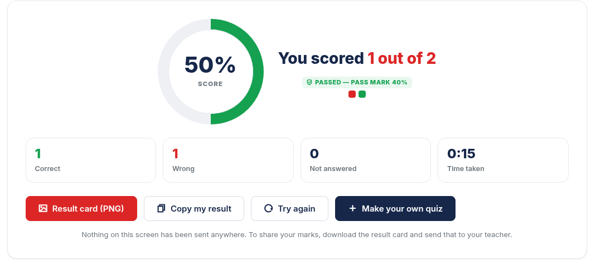
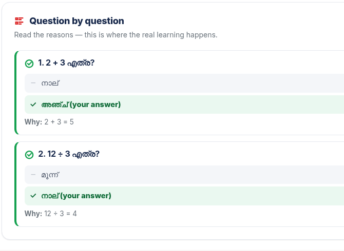

Teacher tools · Low-stakes revision
ClassHud Quiz Maker: make a scored practice quiz and share one link
ClassHud Quiz Maker turns your multiple-choice questions into a browser quiz with instant scoring. We tested English and Malayalam questions without creating an account.
What makes it useful?
A list of questions in a chat still needs a way for people to attempt it and see a score. This tool supplies that next step: an attemptable link, answer choices, immediate marks and a question-by-question review. Prepare the questions and check the answer key yourself. Our test did not use an AI question generator.
It can suit a tutor's short homework practice, a parent's revision activity or a teacher's five-minute topic check. It is less suitable when you need identity verification, controlled attempts, confidential questions or centrally collected marks.
How to make a quiz
Open the builder and check its contents
Start at the Quiz Maker link. Our session opened with five demo questions, so do not assume the builder is empty. Give your quiz a clear title. Teacher/school and class/subject fields are optional; leave personal information out of a public practice link.
Write questions or paste them in bulk
Use Build to add questions individually, or open Import / Export. For bulk entry, put the question on the first line, each option on a separate line, and an asterisk before the correct option. A final
Why:line becomes an explanation. Leave a blank line between questions.What is 2 + 3? 4 *5 Why: Adding two and three gives five. What is 12 divided by 3? 3 *4 Why: Three groups of four make twelve.
Add to quiz keeps existing questions. Replace all questions replaces them. We used replacement for our demo, then checked the question count and answer key. Keep your original question text separately.
Check the rules and preview
The builder offers answer-reveal settings, a pass mark, a time limit and shuffle controls. We used no time limit and answers at the end, with a displayed 40% pass mark. We did not test timers or shuffle behaviour. Open the student preview or generated link before sharing and verify every correct option and explanation.
Generate the link
Open the builder's Share tab. It displays the quiz link, a length meter and a QR code. The English sample produced a 265-character link; our separate Malayalam sample was 244 characters. Those are the lengths of these small examples, not a promise about every quiz.
The provider recommends keeping links under about 2,000 characters. This is length guidance, not a fixed question-count limit. Long questions and explanations use more space. Split a long worksheet into shorter quizzes and test the complete received link before relying on it.
Actual sharing screen, 22 November 2026. We decoded the QR from the screenshot and matched it to the tested link. No physical camera scan or real WhatsApp delivery was tested. Original 1920×1080 capture. On phones, the preview is cropped; tap for the full original. View original image

What the student sees
The generated link opens the quiz's start screen. The name field was optional in our test, and we left it blank. We could start, choose an answer, move to the next question and finish without an account.
The result showed the percentage, correct and wrong counts, unanswered count and a question-by-question review with our explanations. The interface also offers a result-card PNG button. We did not verify that download, so the result screen itself is the tested evidence here.

Controlled test: one deliberately wrong answer and one correct answer produced 1/2 and 50%. The displayed pass mark was 40%, so this result was marked passed. Original 1920×1080 capture, 22 November 2026. On phones, the preview is cropped; tap for the full original. View original image


Can you use Malayalam questions?
Our small sample worked. We pasted two arithmetic questions containing Malayalam text and Malayalam answer options, opened the generated link in a 390px mobile layout and completed both correctly. The result was 2/2 and 100%. The question, options and finish control fitted that layout without page-width overflow.
This checks those two strings and that attempt flow. It does not mean the interface is translated into Malayalam, every Malayalam character combination is verified, or every phone and accessibility setup has been tested. The surrounding controls remained in English.

Malayalam sample review after the mobile-layout attempt, captured at the original 1920×1080 desktop size on 22 November 2026. This is the actual site, not a rebuilt interface. On phones, the preview is cropped; tap for the full original. View original image

Download the small Malayalam text fixture. It is a demonstration, not a curriculum-aligned question bank.
How do marks reach the teacher?
The provider says each result stays on the student's device rather than appearing in a central teacher dashboard. Its suggested workflow is for students to show their result or send a result-card image themselves. Our guide does not claim automatic roll-number-wise collection, verified student identity or tamper-proof marks.
If you need a formal class record, use a school-approved assessment platform with the collection and access controls your school requires. Do not treat an editable screenshot or self-reported score as an authenticated exam result.
Free use and privacy are different questions
ClassHud advertises this tool as free. No account, card or payment was requested in our tested creator and student flows. ClassHud's separate institute products have their own plans and terms; this review is not about those products or a guarantee of future pricing.
The Quiz Maker page says the quiz is compressed into the # fragment of its URL and processed in the browser. MDN's web documentation confirms that fragments are not sent with the initial request for a resource. It also documents how page JavaScript can read them. A fragment is therefore not a privacy or secrecy guarantee.
The site's general privacy policy and cookie policy disclose browsing/usage analytics. We did not audit scripts, network traffic, retention or the operator's local-processing claims. Do not infer no tracking or no data collection from the absence of a login.
Use generic practice material, keep the optional name blank where possible, and avoid phone numbers, student IDs, school rosters or private examinations. For minors, a parent or teacher should review the site and school rules before use. No real student data was used in this review.
Keep a copy and test your link
The link is important: keep its full #q=… portion intact. Do not assume that a shortened or cut-off message preserves the quiz. We verified opening generated links directly, not transmission through every messaging app.
The interface offers JSON backup and printing, but we did not test those functions. Keep your original questions separately. The provider's statement that a link lasts indefinitely is not a service-availability guarantee, so do not depend on one hosted link as your only record.
Exactly what we tested
- Replacing the demo with two original English questions through bulk import.
- Opening the generated 265-character student link without signing in.
- One-right/one-wrong scoring at 50%, then a two-right retake at 100%, with explanations.
- Decoding the QR pixels from an actual screenshot and matching the exact tested English link.
- A separate two-question Malayalam quiz, its 244-character link and a complete 100% attempt at 390px width.
We did not test real class delivery, physical phone-camera scanning, timers, shuffle behaviour, result-card or QR downloads, JSON backup/import, printing, screen readers, long quizzes, persistence across devices or privacy/security guarantees. No real group received a quiz. This is a focused functional check, not a reliability certification or a review of the entire ClassHud collection.
Sources
- Quiz Maker (Open source) · operator product page and direct functional test.
- Learning tools catalogue (Open source) · operator catalogue.
- ClassHud learning-tools article (Open source) · operator explainer, dated 21 October 2026.
- Classonapp learning-tools explainer (Open source) · promotional explainer, dated 10 November 2026.
- Privacy policy (Open source) · operator legal notice, updated October 2026.
- Terms (Open source) · operator legal notice, updated October 2026.
- Cookie policy (Open source) · operator legal notice.
- Location.hash (Open source) · independent primary web documentation.
- URI fragment (Open source) · independent primary web documentation.
Independent AiCoN explainer. Not a ClassHud publication or school endorsement. Sources and direct tests checked 22 November 2026. No independent product review establishing long-term reliability was found in the searches used for this check.